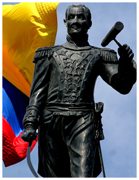
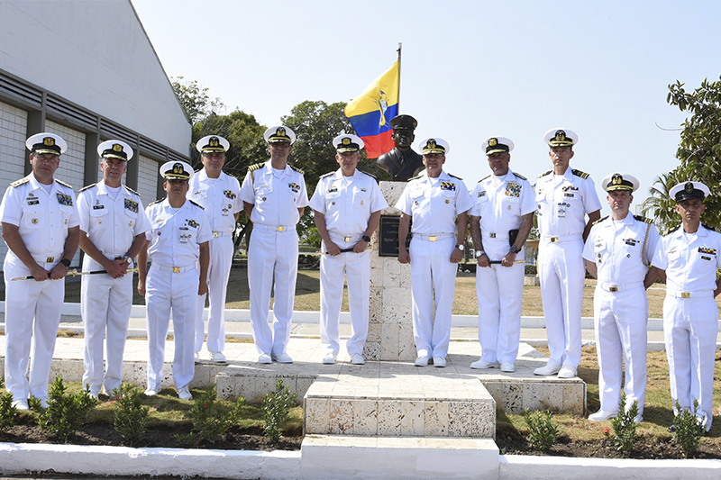
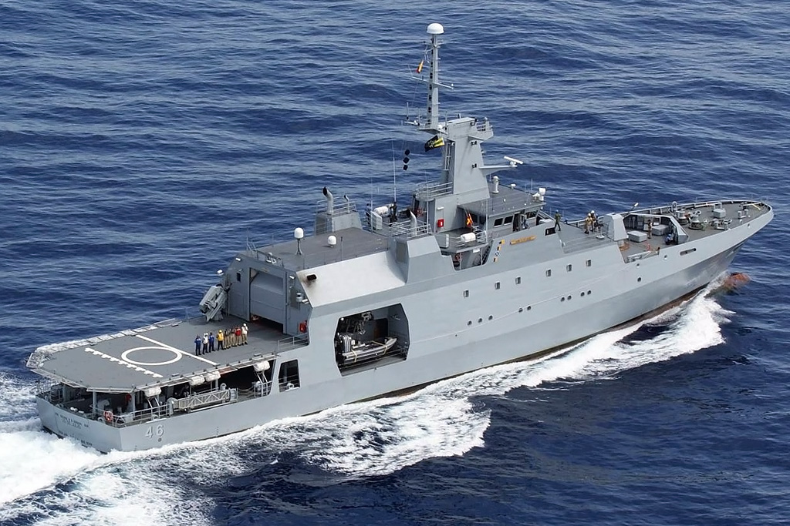

"Desarrollar operaciones navales para la defensa y seguridad nacional, y la protección de los intereses marítimos y fluviales, contribuyendo al desarrollo sostenible del Estado"
"Ser una Armada de proyección e influencia regional con tecnología y capacidades para la defensa y seguridad nacional, relevante para el desarrollo de los intereses marítimos fluviales reconocida por su integridad y contribución al progreso del país"
"Formar integralmente a Oficiales y Cadetes de la Armada Nacional, de la Marina Mercante y a profesionales del sector marítimo, propiciando las funciones de Docencia, Investigación, y Proyección Social, fomentando la cultura de la autoevaluación permanente en procura de la calidad y pertinencia de la educación, en el contexto de un mundo globalizado, con el propósito de contribuir al cumplimiento de la Misión Institucional"
Instalaciones

Almirante Padilla
Historia: https://www.escuelanaval.edu.co/es/historia_almirante_padilla


Carreras que ofrece
PREGADOS
- Ciencias Navales para Oficiales de Infantería
- Ciencias Navales para Oficiales Navales
- Administración
- Ciencicas Náuticas para Oficiales Mercantes
- Oceanografía Física
- Ingeniería Naval
- Ingeniería Electrónica
- Administración Marítima
POSGRADOS
DIPLOMADOS Y CURSOS
- Diplomado en Sistemas de Información Geográfica, Teledetección y Base de Datos Georreferenciada
- Diplomado en Métodos Estadísticos para el Análisis de Datos Ambientales
- Diplomado en Planeamiento Táctico en Operaciones Navales
- Diplomado en Logística Portuaria
- Diplomado en Ingeniería Naval
- Diplomado en Actualización en Ciencias Navales
- Diplomado en Docencia Universitaria y Herramientas Didácticas de Enseñanza
- Diplomado para la Prevención de la Contaminación del Medio Marino y Fluvial
- Diplomado en Oceanografía
- Diplomado en Seguridasd Eléctrica e Instrumentación
- Diplomado en Actualización en Contratación Estatal
- Diplomado en Logística Integal del Turismo
- Diplomado en Meteorología
- Diplomado en Geoestrategia y Asuntos Políticos
- Diplomado en Gestión de Activos y Mtto
- Diplomado en Planeación y Gestión de Proyectos
- Diplomado de Dinámicas del Narcotráfico Marítimo, Fluvial y Portuario
{kind=link}
{kind=link}
{kind=link}